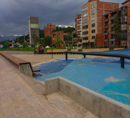
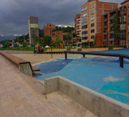

Todos los fines de semana con la intención de pasar un rato en familia, entrando en contacto con la tierra para robarle un poco de energía y recargarse de buena "vibra" niños, adultos, jóvenes y mascotas son los dueños de este espacio.
 

Es un proyecto integral de transformación urbana que unirá la ciudad de Medellín a través de las dos márgenes del río. Esta obra contempla en su diseño el mejoramiento de la infraestructura, el paisajismo y la vegetación
Una representación de los pueblos tradicionales de Antioquia, que se vuelve a sí misma una réplica conmemorativa de la tradición paisa, un lugar acogedor para disfrutar y compartir.
Medellín, ciudad de exóticos lugares llenos de color y vida, permite a todos sus visitantes y habitantes disfrutar de una gran experiencia, única e inolvidable.